Blockchain, marketing and the metaverse
Background
Following the Milan Fashion Week, the first ever Metaverse Fashion Week (MVFW) was hosted on Decentraland between 2022-03-23 and 2022-03-27. It offered classic runways and panel discussion as well as flagship stores of well known brands (such as Estée Lauder, Philipp Plein or Forever 21), pop-up stores and after show parties.
Importantly, visitors were able to buy NFTs that match physical products. Some NFTs were even shipped with vouchers that could be redeemed for the respective physical twin.
Data
import twint
# Configure
config = twint.Config()
config.Search = "mvfw"
config.Lang = "en"
config.Since = "2021-11-27 00:00:00"
config.Until = "2022-04-26 00:00:00"
# config.Limit = 100
Store_csv = True
config.Output = "tweetMetaverseFashionWeek.csv"
# Run
twint.run.Search(config)Refactor
The data contains 10.049 rows, each representing a tweet. Its columns represent some IDs, meta information about URLs, retweets, etc. as well as the tweets itself (from which I removed URLs using qdapRegex::rm_url()). The data was scraped for a period ranging from 2021-11-27 to 2022-04-26.
I subset the data to focus on english tweets. In addition, I prune duplicated tweets. This leaves us with a data.table that has 3.022 rows that correspond to unique English tweets.
The metaverse fashionweek (MVFW) took place from March 24th until March 27th. The following graph inspects the number of tweets posted in and around that time.
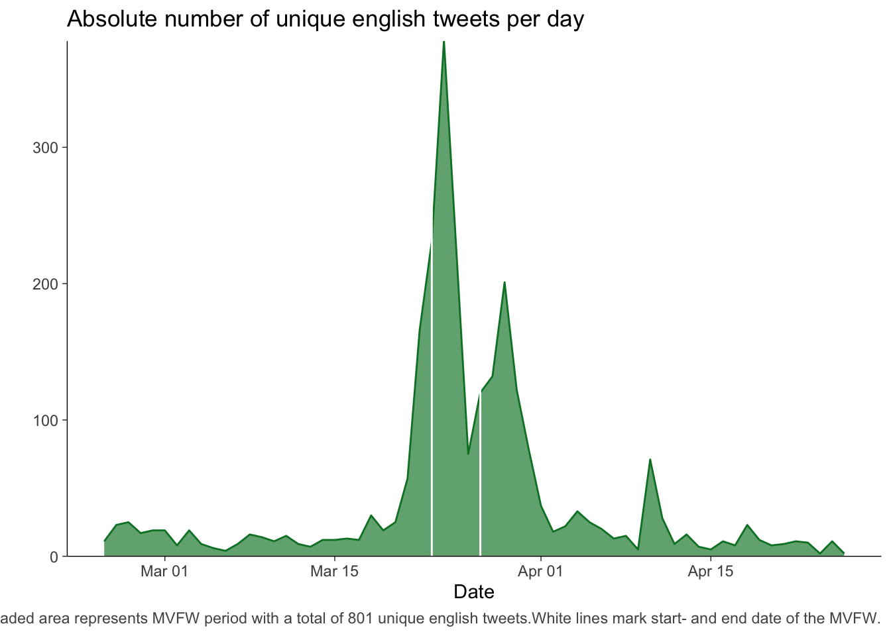
As the following table shows, there are few usernames who are associated to quite a lot of posts. Simultaneously, there are many usernames, who have only posted one tweet (that ended up being in our data).
| username | number of tweets |
|---|---|
| additionalrules | 25 |
| cryptscp | 22 |
| bosonprotocol | 21 |
| djtraxnft | 19 |
| media_diamante | 18 |
More precisely, there are 1522 (or 78%) users with only one tweet in our data.
Moreover, we count 120 users with qualified tweets before and after the MVFW. We can exploit the corresponding tweets for a within-subject-design, to display how the sentiment of tweeters changed over time (pre- and post-MVFW).
Polarity Analyses
Given the available data and according to this analysis plan, I’ll analyze tweets over time in what follows.
Within-Subjects
We want to analyze tweets of people who posted before and after the MVFW and see whether their polarity or sentiment changed during the event. To get the corresponding data, I create two subsets of data: one with tweets from before (A) and one with tweets from after (B) the MVFS. I then perform an inner join with these two tables which yields data (C) that only contains tweets of users who tweeted in both periods. I can then use these withinUserss to create a within data.table by selecting only the data of these usernames.
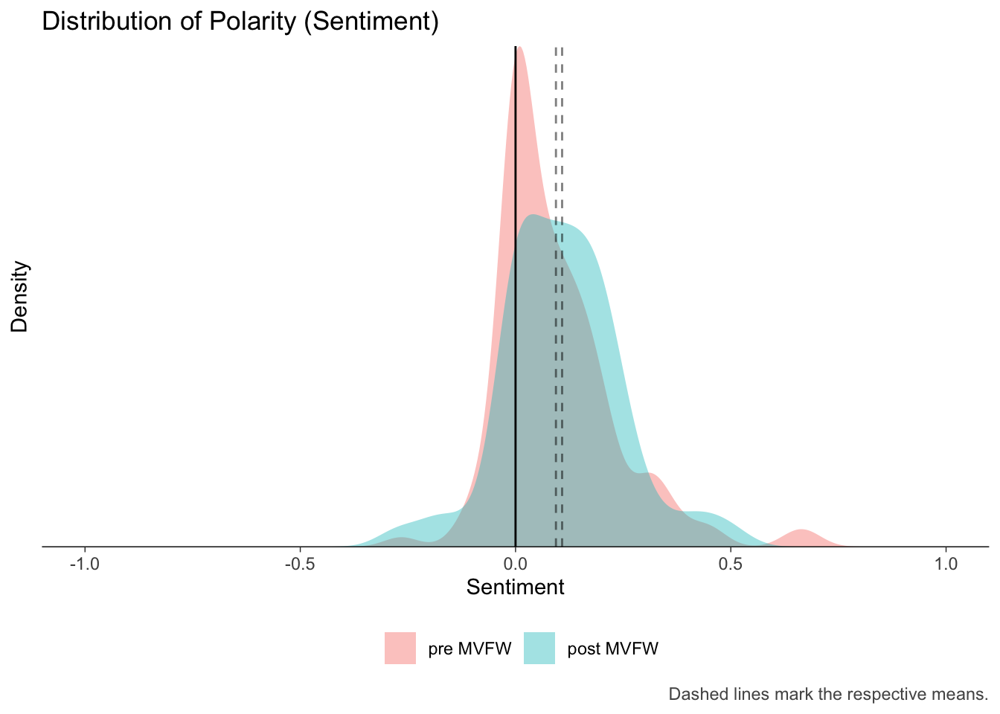
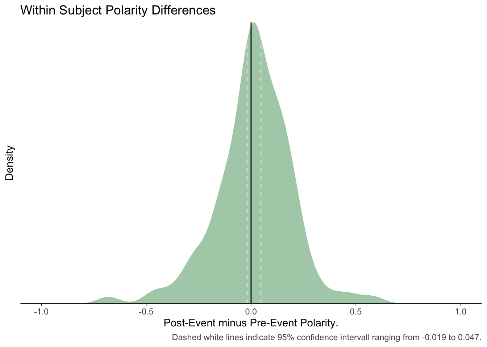
Between Subjects
If we limit ourselves to users who (as far as we know) tweeted before and after the MVFW, we have to prune a lot of data. More precisely, we ignore 79% of the available tweets.1
For this reason, it is worthwhile to also look into aggregate effects. As before, sentiment_by yields average polarities (ave_sentiment) across time periods.
| timing | word_count | sd | ave_sentiment |
|---|---|---|---|
| before | 23634 | 0.1706443 | 0.1932699 |
| during | 14615 | 0.1795031 | 0.1684926 |
| after | 16782 | 0.1794627 | 0.1721846 |
Using the same function, one can plot distributions, simply by calculating the polarity for each tweet.
Warning: Removed 1 rows containing non-finite values (stat_density).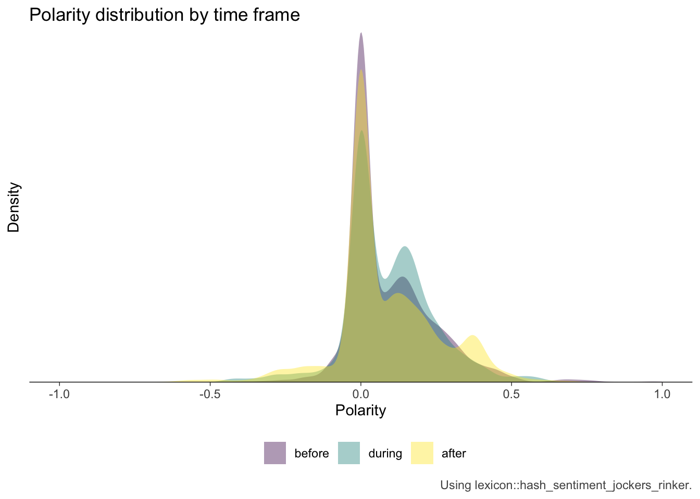
Both, the table as well as the figure show considerable differences. The distributions illustrate, however, that there are many tweets (across all time periods) with a neutral polarity. In addition, relatively few have a negative sentiment.
Sentiment Analysis: Emotional States
In addition, we can run another sentiment analysis using Plutchik Wheel.
Between Subjects
Luckily, the lexicon package contains a nrc lexicon that is tidy (which saves me some lines of code). I’ll eventually merge it with a tidy document term matrix (DTM), that I’ll create next.
The DTM is created using a loop that combines a long character for all of a news outlet’s articles. The combined vector is then being turned into a corpus, cleaned and transferred into a matrix. After renaming the rows (using the outlet’s names), the matrix is turned into a DTM again and then tidy-ed.
The resulting tidyCorp can now be merged with the nrc_emotions lexicon. Because data.table processes a full join, I’ll remove all the rows that do not contain any count information.
We can then use the data and create a radar chart. The process is a little ugly, because chartJSRadar() requires a list and I have not found an elegant way to create one.
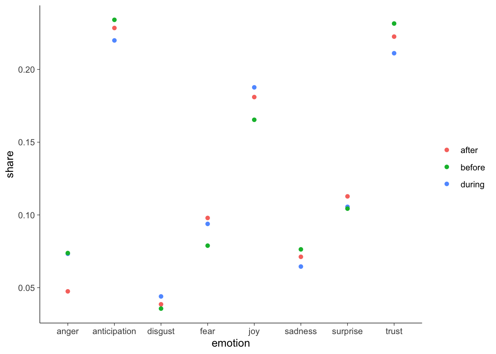
We can follow the same procedure using the bing lexicon.
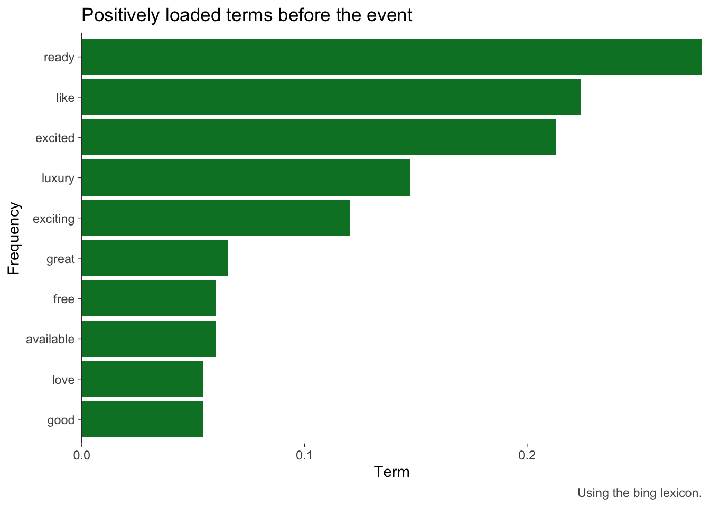
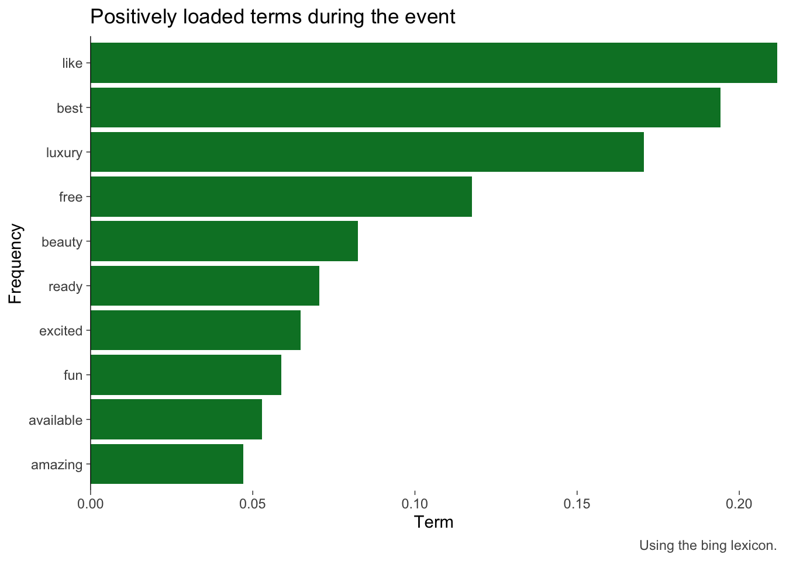
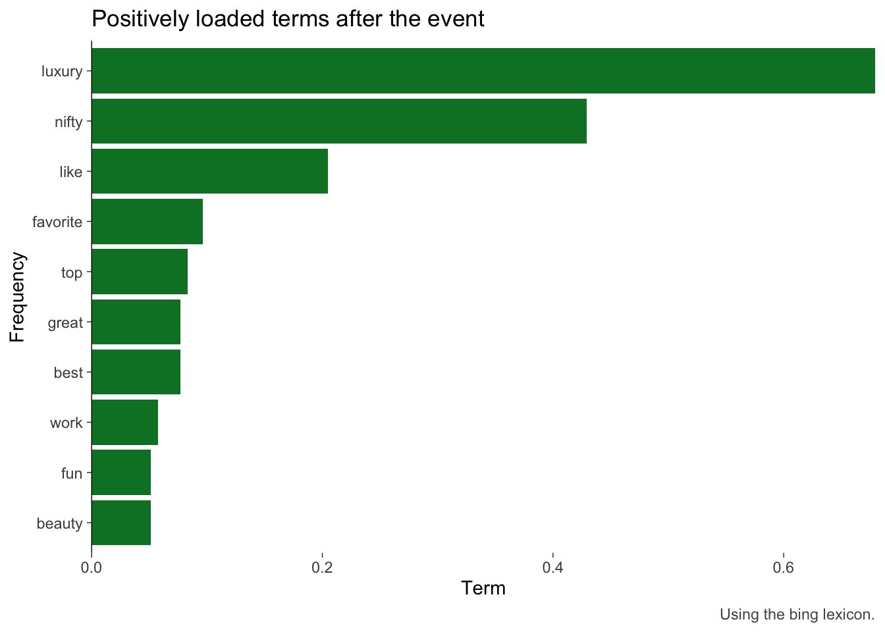
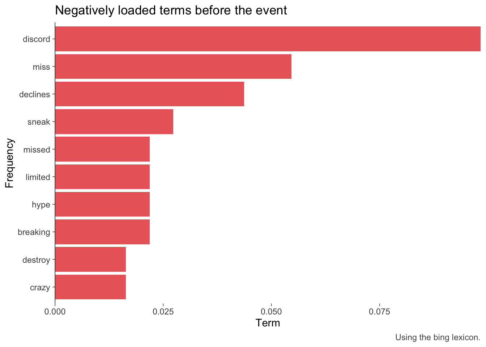
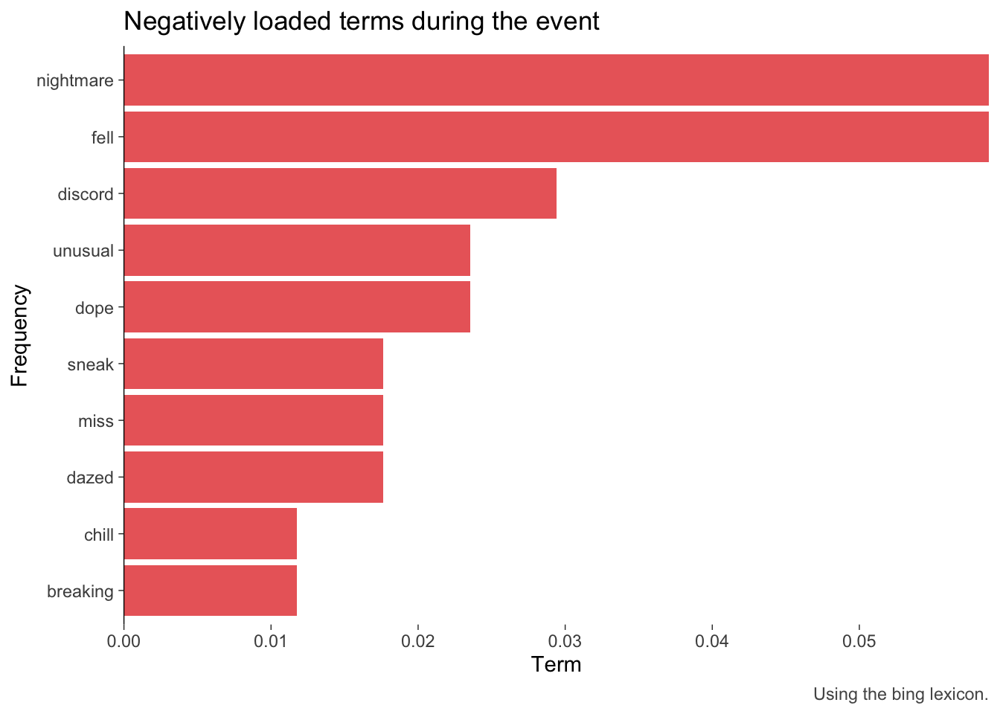
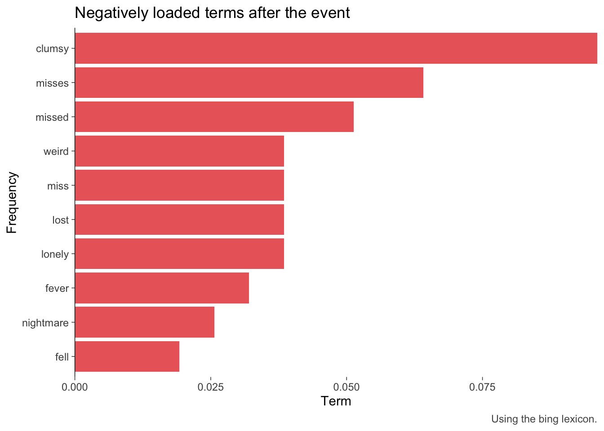
Topics
[1] "metatokyo" "finally" "opening" "doors"
[5] "visitors" "dive" "japanese" "culture"
[9] "read" "fashionshow" "tokyofashionweek" "japaneseculture"
[13] "firstever" "digital" "stay" [1] 5158 [,1] [,2] [,3] [,4] [,5] [,6] [,7] [,8] [,9] [,10] [,11] [,12]
[1,] 0 1 2 3 4 5 6 7 8 0 9 10
[2,] 1 1 1 1 1 1 1 1 1 1 1 1 [,1] [,2] [,3] [,4] [,5] [,6] [,7] [,8]
[1,] 166 167 168 169 170 38 171 172
[2,] 1 1 1 1 1 1 1 1[1] "charlesron collaborated arize present intricate pieces d la now can view chloe bag ar comfort homeofficeanywhere find via la nft ar vr d"
[1] "first look premium quality puff print grillz gang hoodie pcs available order order contains physical clothing piece wearable wldfngz life new fang city launching march th"
[1] "heres designer philipp plein kitting new london store web genius bar nft museum article link follow nft updates like nft nft nftart nftartists nftcommunity nftc"Lade n"otigen Namensraum: servrFrequent Terms and Associations
| word | frequency |
|---|---|
| nft | 403 |
| first | 193 |
| will | 158 |
| march | 144 |
| host | 117 |
| virtual | 103 |
| tommy | 100 |
| hilfiger | 99 |
| digital | 90 |
| crypto | 86 |
| word | frequency |
|---|---|
| nft | 196 |
| first | 121 |
| brands | 84 |
| cproject | 67 |
| show | 51 |
| will | 50 |
| runway | 49 |
| mvfw | 48 |
| decentralands | 47 |
| metaversefashionweek | 44 |
| word | frequency |
|---|---|
| nft | 329 |
| brands | 152 |
| digital | 146 |
| firstever | 141 |
| news | 133 |
| first | 116 |
| runway | 116 |
| crypto | 114 |
| luxury | 106 |
| take | 91 |
| nft | terms |
|---|---|
| 0.36 | nftcommunity |
| 0.28 | minkoff |
| 0.27 | back |
| 0.27 | rebecca |
| 0.26 | showcase |
| 0.25 | hilfiger |
| 0.25 | spring |
| 0.25 | tommy |
| 0.24 | goes |
| 0.24 | wearables |
| 0.23 | collection |
| 0.23 | nftart |
| 0.21 | nftnews |
| 0.20 | collections |
| nft | terms |
|---|---|
| 0.49 | offer |
| 0.47 | serum |
| 0.45 | skin |
| 0.40 | lauder |
| 0.39 | free |
| 0.38 | este |
| 0.37 | nftcommunity |
| 0.23 | bitcoin |
| 0.23 | nftart |
| 0.23 | nftnews |
| 0.21 | inaugural |
| 0.20 | liverpool |
| 0.20 | sothebys |
| 0.20 | thenftunicorn |
| nft | terms |
|---|---|
| 0.45 | adoption |
| 0.40 | tokens |
| 0.37 | nftcommunity |
| 0.35 | take |
| 0.32 | runway |
| 0.31 | nftart |
| 0.28 | nftartists |
| 0.24 | follow |
| 0.23 | consumers |
| 0.23 | demonstrated |
| 0.23 | engage |
| 0.23 | using |
Preparation
terms frequency
1: nft 928
2: first 430
3: brands 318
4: digital 269
5: will 234
6: crypto 228
7: news 228
8: firstever 218
9: decentralands 200
10: virtual 196Footnotes
Because we focus on 240 users that have tweeted at least before and after the event.↩︎